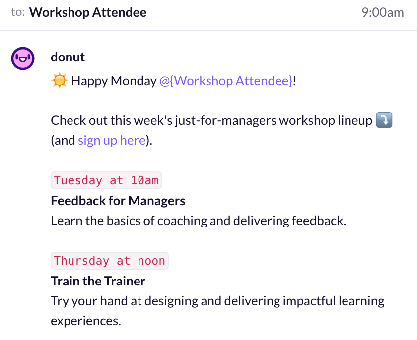
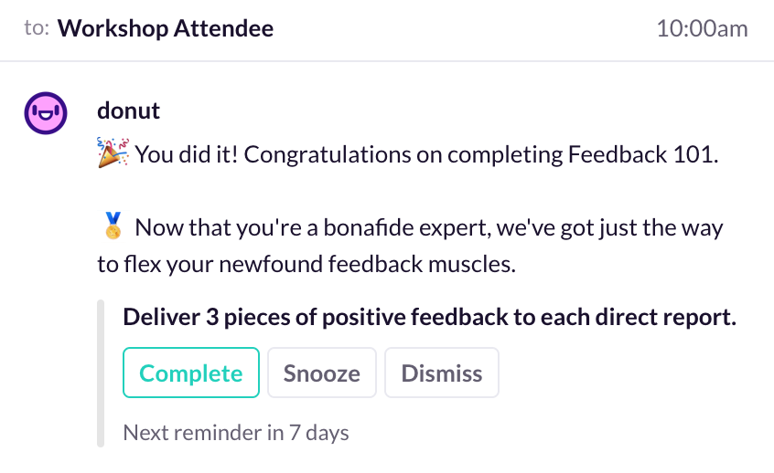
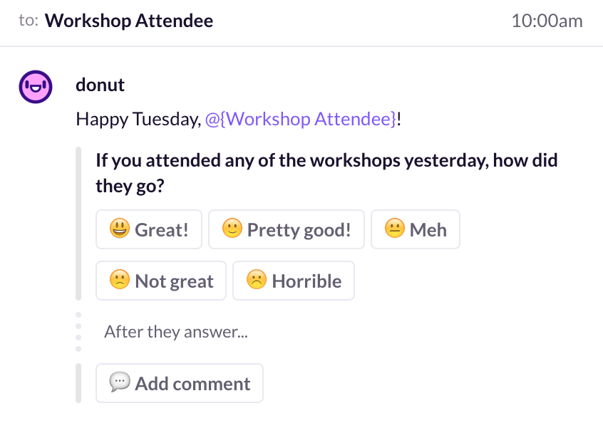
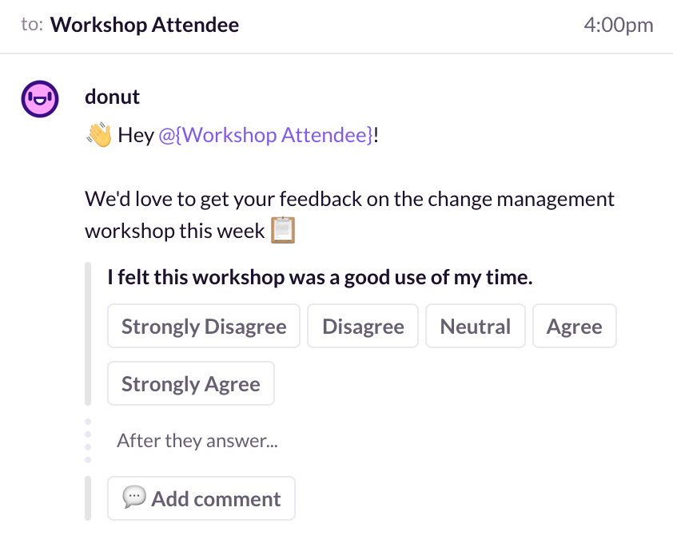

Learning and development teams have a unique mission: to lift up an entire organization, usually one that is many multiples larger than the learning and development team itself, one individual at a time. We‚Äôre there to make our organizations better by helping co-workers around us to learn, grow, and become even better versions of themselves. We do this while always being outnumbered, and usually under-resourced. Needless to say, this isn’t an easy task.
So how do we do it? Usually with the right mix of passion, resourcefulness, and strong coffee. But once you settle in with your double espresso, it all comes down to how we communicate with our larger organizations, how we make our programs known, and how we engage with the learners participating in those programs. Each one of these activities are individually and uniquely challenging, and they only get more difficult as your organization grows.
These are my tips, tactics, and tools I’ve relied on throughout my career to help create effective and engaging learning experiences, no matter the organization’s size or needs.

Internal Messaging & Marketing
Increasing visibility within your organization is an almost universal challenge for learning and development teams. It’s difficult to have a real impact if people don’t know about all of your amazing work. Because of this, many learning and development professionals spend a lot of their time thinking about internal messaging and marketing. Whether you’re announcing a new in-person workshop that individuals can sign up for or attend, or maybe an online module that you need everyone to complete, there are a few ways you can make your internal messaging more effective.
Reaching People Where They Are
Whenever you create a new learning experience, one of the first things you need to do is a gap analysis. What’s holding your participants back from being able to apply a certain skill? What kinds of knowledge or experiences do your participants need that your learning experience could provide? Training can really only be effective if it’s specifically designed for its intended audience. The same principle should apply to your messaging.
There are a number of ways to personalize your internal marketing, from the communication channel to the message itself. The most impactful way to get your audience’s attention and get on their calendars is to reach people where they already are. You don’t need to reinvent the wheel‚Äîif they’re already on Slack all day, try sending them a message or posting in a channel. If everyone watches the digital bulletin board near the lunch tables, add a colorful slide to the rotator.
Once you‚Äôve figured out the medium, it‚Äôs time to craft your message…
“Training can really only be effective if it‚Äôs specifically designed for its intended audience. The same principle should apply to your messaging.”Andre Plaut
Huge, Director of Learning and Development
Emphasize the Benefits & Make It Personal
In order for your team to truly engage with learning, they first need understand why the subject is relevant to them and how they‚Äôll benefit from it. That’s why crafting messaging carefully is important: As soon as someone receives your message, they should know right away why they received it and what they stand to gain from engaging with it.
Start by identifying the objective of the learning experience: what should learners be able to do by the end of the workshop or learning module? But don’t stop there. Why is that objective important? Why should your learners want to be able to do that thing? If your learning objective is the “what” then the benefit it brings is the “so what?”. For example, maybe you have a workshop to help people run more effective meetings. The benefit? To rid the world of terrible meetings that none of us want to be a part of.
Personalizing messaging is hard, especially when you’re one person running a variety of different workshops and programming. But the right tech stack can give you superpowers. Using a tool like Donut allows you to segment communications by engineers versus creative managers, and to scale the kind of personalized messaging that drives signups.
Have Fun With It
I was once asked how it’s possible to strike a balance between efficacy and fun when designing a learning experience. I was baffled. Effective learning experiences should always be fun. There’s absolutely no reason for you to feel like fun should ever be a trade-off for effectiveness. The same goes for the way your team communicates.
Your learning and development team is in many ways its own brand. Just like any brand, it should have its own distinct tone and personality. Should it be witty? Casual? Is it a trusted expert or quirky friend? How will that tone come through each medium of your choice and the messaging itself?
Slack, for example, may be where work happens, but it‚Äôs also where a lot of your company‚Äôs culture and overall ridiculousness takes place. Your learning and development messages should feel like they fit right in. Even something as small as using emojis to break up the monotony of text-heavy messages can make a big difference üí™
Make it Actionable
The ultimate goal is to get people to participate in your offerings, and for that, you need to get them to sign up, log on, and show up. Anyone receiving your messages should be able to take immediate action to get involved. If your goal is to get individuals to complete an online learning module, you can link them directly to it in Slack. If you want them to sign up for an in-person workshop, you can add a call-to-action button directly into your message.
“Your learning experiences should have an impact in the real world.”Andre Plaut
Engagement & Follow-Up
Your learning experiences should have an impact in the real world. Encouraging your participants to apply their newly-attained skills, and capturing their feedback after they’ve completed your workshop or online module are two critical activities of an effective learning and development team. That sounds good in practice, but delivering that to hundreds of individuals in dozens of different learning experiences simultaneously can be challenging.

Create Challenges
One way to keep your learners engaged is to send them relevant weekly challenges that encourage them to apply the things they learned from your workshop or online module. Focus on creating challenges that relate to specific parts of your training, and make sure they pass the SMART test: Specific, Measurable, Achievable, Relevant, and Timely. Here are some examples:
- “Over the next week, deliver 3 pieces of specific positive feedback to each one of your direct reports.”
- “Over the next month, identify a topic that you’d like to create a presentation for, and then develop an outline for that presentation that includes a through-line, and clearly identifies who your audience is and what impact you want to have on them.”
These tasks are even more powerful if they’re delivered in a way that keeps participants accountable by reminding them to complete it, and then gives them a chance to mark them as “done” in a way that allows you to keep track of it.
Request Feedback
Learning experiences should continuously evolve based on feedback from participants. Handwritten feedback forms distributed at the end of a workshop, one of the most common methods of collecting feedback, have a number of drawbacks. For one, it takes a while to collect those forms, plug them into a spreadsheet, and analyze the data. The other drawback is that participants may not feel comfortable delivering honest feedback knowing that the facilitator is standing right over their shoulder.
In order to give participants the opportunity to privately deliver feedback that I can instantly analyze, I’ll usually send them an online feedback form along with all of the materials from the training a few hours after they’ve completed it.

As a general rule, the more questions you ask in a feedback survey, the less likely people will be to complete it. If you’re looking to take the minimalist route, you can ask participants just one powerful question to measure whatever metric matters most to you. One good example of this is to use the key Net Promoter Score question: “On a scale of 0 to 10, how likely are you to recommend this workshop to a colleague?” Read more about Net Promoter.
If you’re looking to gather more information, make sure to keep your questions simple and direct. Avoid compound questions that sound like they’re measuring one thing but are actually a combination of variables, for example: “Would you agree that the workshop was interesting and useful?” Questions like that will yield muddled and useless data.

As you craft your questions, ask yourself, ‚Äúwhat is the one thing I‚Äôm trying to learn from this question?‚Äù Forced ranking questions can help you ask specific and targeted questions. Here’s an example:
Rank the following statement from “Strongly Disagree” to “Strongly Agree”
- I felt that this workshop was a good use of my time. [Strongly Disagree, Disagree, Neutral, Agree, Strongly Agree]
- I feel confident applying the skills I learned during that workshop. [Strongly Disagree, Disagree, Neutral, Agree, Strongly Agree]
- The materials provided during the workshop were useful. [Strongly Disagree, Disagree, Neutral, Agree, Strongly Agree]
In Summary
The good news is this: Even if it feels overwhelming, your ability to create impactful learning experiences isn’t predetermined by the size of your team. Cultivating empathy through feedback, leveraging good marketing strategies, and using some tools or automation to your advantage are important tactics that can help you deliver lasting learning experiences, no matter how quickly you’re growing.
About Andre
Over the last 9 years, Andre Plaut has been designing & delivering learning experiences for Apple, Obama for America, General Assembly, and others. Currently, he’s the Director of Learning & Development at Huge Inc. in Brooklyn. Andre has also published articles and spoken at conferences about design, education, and ethical product development. You can find him on Twitter or LinkedIn.
Deliver impactful learning experiences with Donut.